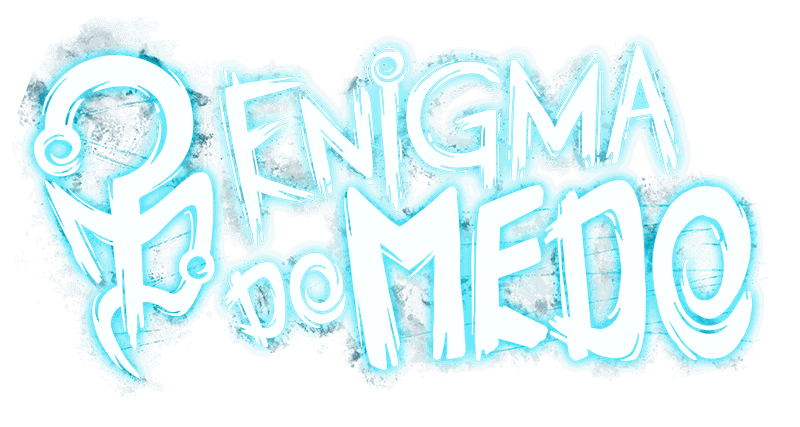
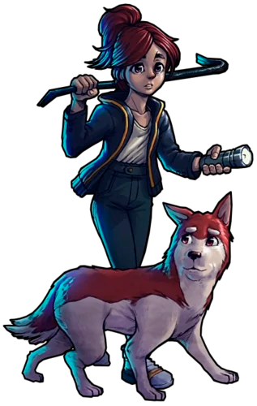

Enigma do Medo é um jogo de exploração, enigmas e sobrevivência com uma narrativa profunda e envolvente no universo de RPG criado por Rafael Lange (Cellbit) que está sendo desenvolvido em parceria com a Dumativa e foi financiado por um projeto no Catarse. Ambientado no universo de Ordem Paranormal, o jogo contará com personagens e criaturas já conhecidos além de novos que serão trazidos pela obra. Foi anunciado em 17 de outubro de 2020 e tem lançamento previsto para o 1º semestre de 2023.
X